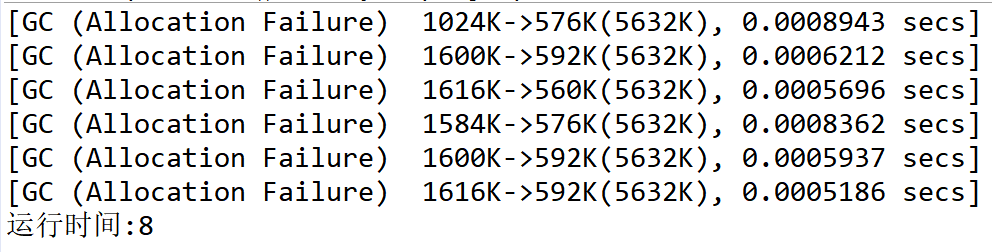
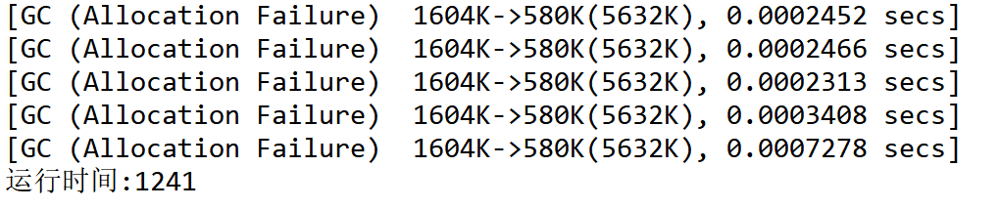

一、前言知识铺垫
1、逃逸对象：在一个方法内创建的对象没有被外界引用则称该对象为未逃逸的对象。
2、JDK1.6以后的HotSpot虚拟机支持运行时的对象逃逸分析。
3、JVM中的参数配置：
1 1）-XX:+PrintFlagsInitial --查看JVM中的默认参数信息
2
3 2)--XX:+DoEscapeAnalysis --开启对象的逃逸分析(JDK8中默认开启)
4
5 3)--XX:-DoEscapeAnalysis --关闭对象的逃逸分析
6
7 4)-XX:+PrintGC --输出GC的基本信息
8
9 5)-XX:+PrintGCDetails --输出GC的详细信息
10
11 6)-Xmx5m/-Xms5m --最大/最小堆配置
二、对象创建时的内存分配
1、对象创建时有可能分配在堆上也有可能分配在栈上。
2、方法内部创建的小对象并且没有逃逸可能分配在栈上。
3、JDK8默认打开逃逸分析,对JVM的执行会有性能上的提高。
4、设计对象时,假如对象不会被多线程共享,多个方法共享，此时,对象的引用应该尽量使用局部变量。
三、逃逸分析的开启与关闭对JVM执行性能的影响
首先，我们先来看一个实例。
1 public class TestObjectInstance01 {
2 public static void main(String[] args) {
3 long start = System.currentTimeMillis();
4 for (int i = 0; i < 100000000; i++) {
5 //调用alloc()方法
6 alloc();
7 }
8 long end = System.currentTimeMillis();
9 System.out.println("运行时间:"+(end-start));
10 }
11
12 private static void alloc() {
13 //创建一个只能存储一个字节的数组对象
14 byte[] arr = new byte[1];
15 arr[0] = 10;
16 }
17 }我们配置了JVM的最大/最小堆参数，并开启了逃逸分析：
-Xmx5m -Xms5m -XX:+DoEscapeAnalysis -XX:+PrintGC运行结果：

接着我们又关闭了逃逸分析：
-Xmx5m -Xms5m -XX:-DoEscapeAnalysis -XX:+PrintGC运行结果：

结果分析：
我们可以看到，开启逃逸分析时，JVM的运行性能要远高于未开启时。因为栈上分配的对象不需要启动GC来进行回收，当调用的方法出栈时，该对象会自动销毁。